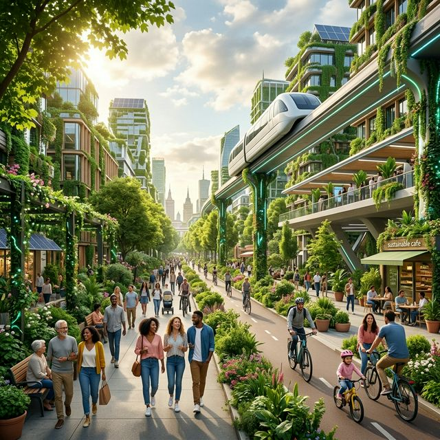

1. Nachtzüge als mobiles Dorf
Ein Abo verbindet 120 Städte. Züge haben Schlafkabinen, Mini-Kitas und Co-Working-Wagen.

Öffentliche Räume sind ruhiger, grüner und zugänglicher. Arbeit, Bildung und Gesundheit sind lokal gut erreichbar, ohne dass Menschen auf Chancen in anderen Regionen verzichten müssen.
Ein Abo verbindet 120 Städte. Züge haben Schlafkabinen, Mini-Kitas und Co-Working-Wagen.
Jede Stadt hat Gesundheits-Labore in Bibliotheken: Check-up in 12 Minuten, Diagnose am selben Tag.
Wenn öffentliche KI mit anonymen Stadtdaten trainiert wird, erhalten alle Bewohner eine jährliche Auszahlung.
Verbundene Schattenwege, Nebelbrunnen und Baumtunnel halten Innenstädte im Sommer 4–6°C kühler.
Jedes Produkt hat einen Reparaturpass. Wer lange nutzt statt neu kauft, zahlt automatisch weniger Steuern.
Öffentliche Displays und Ohrstöpsel übersetzen Gespräche live in 24 Sprachen, ohne Cloud-Profiling.